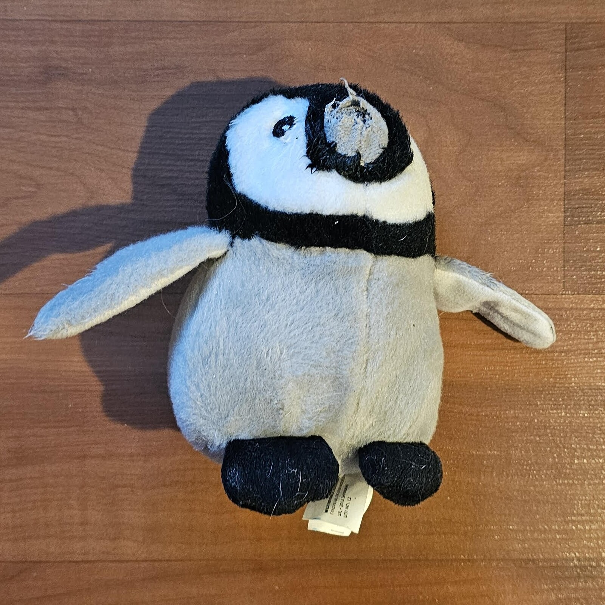
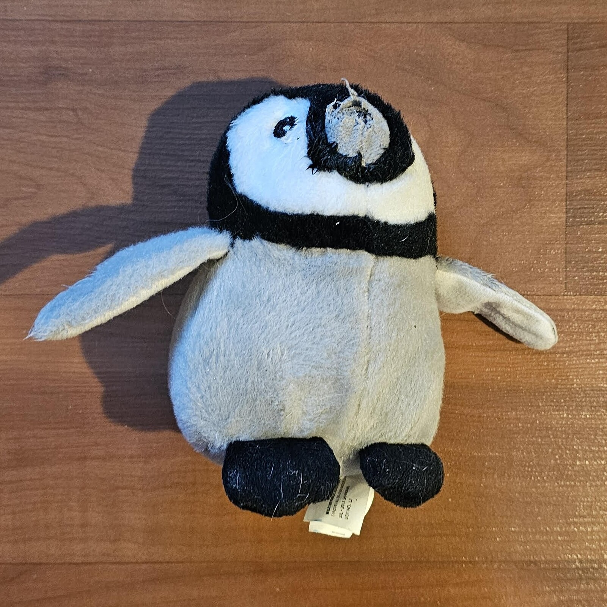
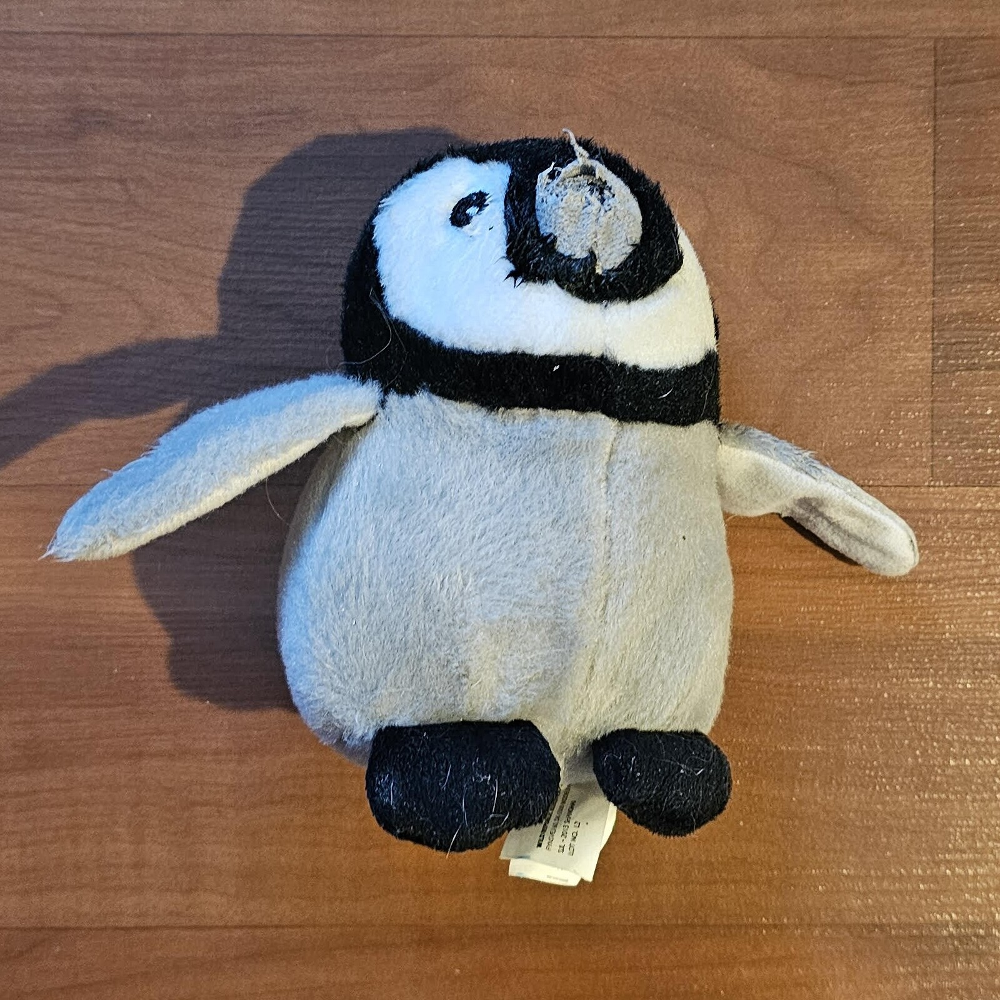

Gallery


 



Every week, I take some time to look at the things I throw away. It’s not just about keeping track of what I’m getting rid of, but about understanding why these items are leaving my life in the first place. Trash of the Week isn’t about everyday waste. It’s about objects that once had a purpose, things I used, held onto, or forgot about, and why their time is finally up.
I focus on nine discarded items each week, avoiding food and drink-related waste. Instead, I document unusual objects—things that might have had sentimental value, served a practical purpose, or simply sat unused for too long. By doing this, I can look back at when and why I got them, how they fit into my daily life, and what made me decide to let them go.
This project is about paying attention. It’s easy to accumulate stuff and toss things out without much thought. But when I stop to think about what I’m throwing away, I start to see patterns. Some things were well-used, others were impulse buys, and a few were gifts that never really fit into my life. Every item has a small story to tell.
The things we throw away say a lot about us. They reflect our habits, our priorities, and even our emotions. By documenting my trash, I’m hoping to be more intentional with what I own, what I keep, and what I choose to let go.
I bought this sponge in a 6 pack a few months ago for my dishes. We have a dishwasher, but for small things that I need quick I just hand wash them instead of running the washer for just a couple small things. The sponge started to need more pressure to scrub off sticky things so I decided with the extra 5 I had to just replace it. The new sponge works great and the change was definitely worth it.
My house had a problem with water heating and before calling a plumber, I decided to change the filter to see if it would change anything. The process was a kinda of a pain dealing with the leftover water in the system and washing the container of the filter. I bought a pack of 2 last time I changed it and had the extra filter on hand. The change did help with the heat quite substancially and overall glad I did it.
This box came with a delivery that I can't remember what was for. I used this box to hold small items I had to pack around my room while we got new windows in my room. The construction lasted only a couple days but I forgot to replace the items until this last week.
After I rented my snowboard for the 2019-2020 season, the place I rented from gave me a coupon book for local ski mountains. They called this book the "Resort Passport" and I stuffed it somewhere around the house. I recently found it after doing a deep sort of my papers stack where I keep trivial papers.
While this isn't a paper item, technically it's what paper is made out of and this section fits best. Some branches fell off during a snowstorm and this one was the most interesting looking branch. It looks like a mini tree with sub-branches and needles (leafs) at the end. This is the only item that I decomposted in our local decomposter bin.
This also isn't a paper item, but it's used with paper being a bookmark so I'm putting it in the paper section. My little brother got this bookmark at his school's bookfair. It's made of rubber and oddly satisfying to play around with, probably some kind of fidget toy. The rubber started to become hard, like an old rubber band, so we decided to throw it in the trash.
Last week I bought a 12 pack of cola cans and I didn't notice until I got home that a corner of the box had a dried cola stain. When opening the box, I found this can inside completely exploded. I was able to get a refund from the gorcery store and keep the rest of the box on top of that.
I came home yesterday to find a penguin plushy that I bought a while ago for my niece chewed up by my dog. The nose is missing as well as the tail in the back (not shown in the photo). I was kind of sad that the toy was destroyed but thankfully it's not the only toy I got for my niece.

| Item Name | Disposal | Weight | Time Used | Source | Cost |
|---|---|---|---|---|---|
| Cardboard Box | |||||
| Cola Can | |||||
| Pen | |||||
| Penguin Plushy | |||||
| Resort Passport | |||||
| Sponge | |||||
| Tree Branch | |||||
| Water Filter | |||||
| Weird Bookmark |